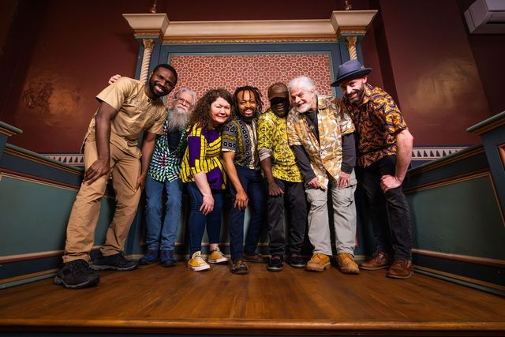

Mixed Roots at Sacandaga Valley
6:00 pm - 8:00 pm · Sacandaga Valley Arts Network, Northville, NY
152 North Main Street, Northville, NY 12134

Albany, New York
A band that plays exotic grooves mixed with danceable beats.
The band
We share a hip set of pieces from Africa, America, and places in between.
Under the leadership of the drummer, George, Mixed Roots is a rare breed of band. Its members come from different places and now call Albany, New York home. Together, the band plays with energy that comes from their mixed roots, and they are excited to share their styles with you.
Music is love. One love.
Grew up in Accra, Ghana, learning traditional African beats, and shares his vocabulary of AfroBeat and reggae.
Melts the keys with chordal structures influenced by his Nigerian upbringing.
Showing his Ghanaian roots, he drives danceable beats on the hand drums.
Plays with several upstate New York reggae groups and brings flavors from the Grateful Dead and others.
Decades of playing reggae, rock, and all places in between.
The horn section adds local flavor while keeping respect for their worldly interests.
Shows
6:00 pm - 8:00 pm · Sacandaga Valley Arts Network, Northville, NY
152 North Main Street, Northville, NY 12134
Watch & listen
Photos
In the community
In November 2023 we played Celebrate Asylum, a benefit dinner for local asylum seekers at First Lutheran Church in Albany.
Read the Times Union story ↗Booking
Venues, festivals, private parties, community events. Send inquiries to the band; we'd love to hear from you!
Email the bandMixedRootsNewYork@gmail.com